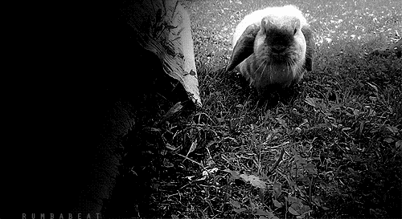

Une démonstration par l’absurde s’effectue en comparant les conséquences de ce raisonnement avec la réalité logique que l’on veut instaurer. Dans tous ces cas, du plus simple au plus complexe, l’absurdité sera d’autant plus grande que l’écart croîtra entre les termes de ma comparaison.
Il y a des mariages absurdes, des défis, des rancoeurs, des silences, des guerres et aussi des paix. Pour chacun d’entre eux, l’absurdité naît d’une comparaison. Je suis donc fondé à dire que le sentiment de l’absurdité ne naît pas du simple examen d’un fait ou d’une impression mais qu’il jaillit de la comparaison entre un état de fait et une certaine réalité, entre une action et le monde qui la dépasse. L’absurde est essentiellement un divorce. Il n’est ni dans l’un ni dans l’autre des éléments comparés. Il naît de leur confrontation.
Albert Camus
Un petit coucou d'un fluffy bunny
Et toi tu aimes les sucettes ?